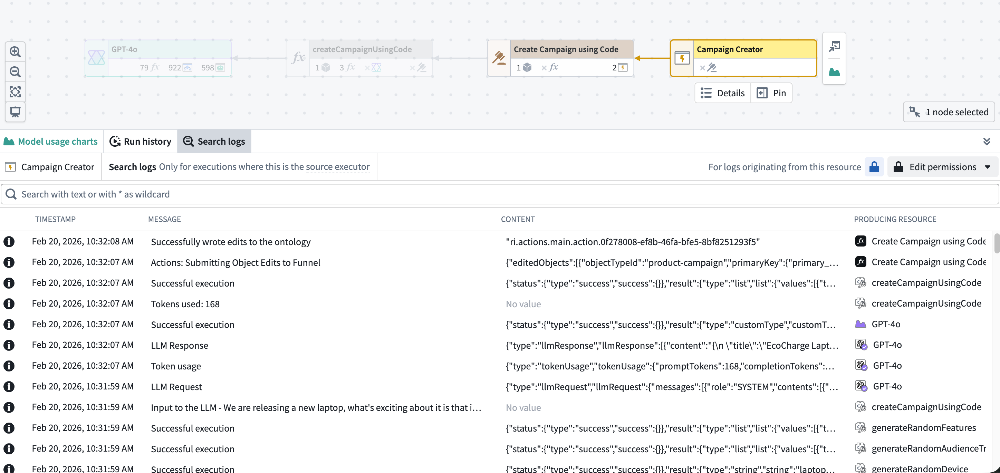
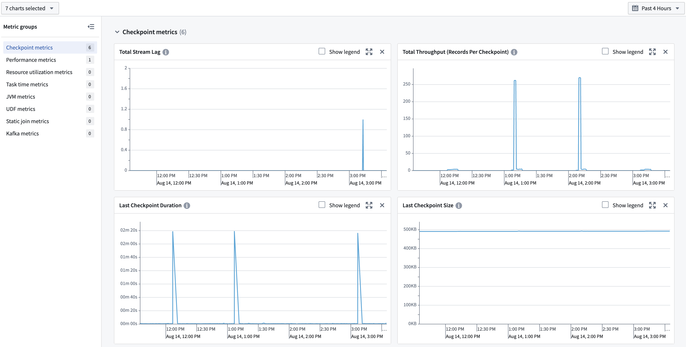
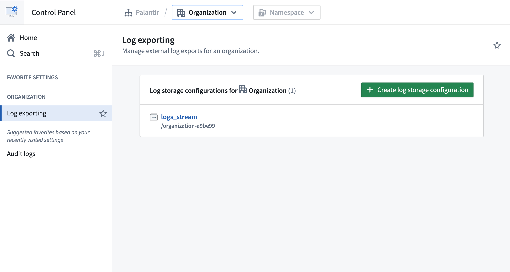

The Palantir platform provides built-in tools to monitor the health of your resources, debug issues in development and production, trace execution across services, and analyze telemetry at scale.

Monitor: You can use the Data Health tool to monitor the platform. With Data Health, you can set up rules and define thresholds for failures, latency and more; configure monitors per resource or at scale across projects; receive alerts through PagerDuty, Slack, webhooks, or Foundry notifications; and view execution counts and P95 latency metrics for the last 30 days.
Debug: The Workflow Lineage tool lets you explore and investigate platform history and logs. You can view seven days of execution history, filter by status, user, duration, or version, and pinpoint exactly which executions need attention. Workflow Lineage also enables you to search across logs from all executions for a source executor to find specific log messages, errors, or patterns.
Trace: To visualize the full request journey across functions, actions, and LLM calls, you can use trace views. Trace views enable you to drill into any operation to see duration, inputs, outputs, and errors.
Analyze: To conduct further analysis on log data, you can export Foundry logs, metrics, and traces to a streaming dataset to power your own dashboards, pipelines, or custom observability workflows.
Monitoring tools help you track the health and stability of your resources over time, detect issues proactively, and receive alerts when problems occur.
Data Health is the primary application for monitoring the health of your platform resources. Data Health provides two feature sets:
Both monitoring views and health checks generate alerts when issues are detected. Alerts can be delivered through Foundry notifications or through external systems such as PagerDuty or Slack.
Foundry provides metrics across multiple resource types to help you monitor health and performance over time.

Debugging tools help you investigate issues during development and in production by providing visibility into execution details, logs, and traces.
Ontology and AIP observability features in Workflow Lineage enable you to gain comprehensive insights into your AIP and Ontology workflow executions. Use Ontology and AIP observability features to understand the performance of your agents, functions, language models, automations, actions, and Ontology.
Ontology and AIP observability features can be used to gain visibility into metrics, execution history, distributed tracing, logging, and log search.
You can view logs from both third-party libraries being used to run your code (such as Kafka when using streams), as well as logs emitted by your code. Logs are available on several types of jobs:
You can also search across logs from all executions for a source executor to find specific log messages, errors, or patterns. A source executor is the first executable resource in the call chain, such as a function, action, automation, AIP Logic, AIP agent, or model live deployment.
:::callout{theme="warning"} Log exporting may not be available in your enrollment. Contact Palantir Support for more information. :::
To allow for arbitrary processing outside the current capabilities of in-platform tools, you can create a stream in a specified folder containing all telemetry for an organization. This includes logs, metrics, and traces. Data in this stream can be analyzed using Foundry's suite of data analysis tools or exported to third-party systems.

Learn more about exporting logs to a stream on the Configure logging page.